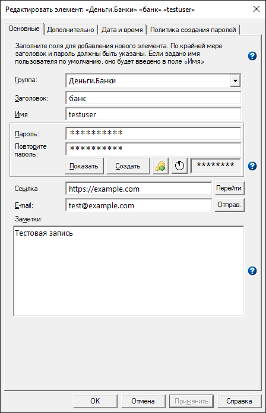

Большинство меток на вкладках «Основные» и «Дополнительно» являются функциональными. При щелчке на них значение соответствующего поля копируется в буфер обмена. После копирования в буфер метка моргнёт зелёным цветом. В настоящий момент следующие метки являются функциональными:
Основные
Группа
Заголовок
Имя пользователя
Пароль
Заметки
Ссылка
E-mail
Дополнительно
Автонабор
Выполнить команду
Примечание. Если при щелчке на метке «Автонабор» или «Выполнить команду» удерживать клавишу Ctrl, то при копировании в буфер обмена не будут подставлены значения переменных.
Вкладка «Основные»
На данной вкладке собраны самые важные элементы.

Ниже приведено описание полей, связанных с каждым элементом:
Группа: имя, используемое для группировки (систематизации) связанных элементов;
Заголовок: имя, характеризующее данный элемент;
Имя: имя пользователя;
Пароль: пароль;
Заметки: произвольные заметки для данного элемента;
Обязательными являются только поля заголовок и пароль.
Поле Заметки предназначено для хранения небольшого текста и ограничено 30 000 символов. При создании элемента в это поле можно записать текст большего размера, но при открытии контейнера будет выводиться предупреждение. При редактировании элемента текст заметок будет усечён до указанного предела. Если элемент защищён или контейнер открыт в режиме «только чтение», текст заметок можно просматривать без усечения.
Заметки можно редактировать во внешнем редакторе, если щёлкнуть по полю правой кнопкой. В этом случае содержимое будет временно сохранено на диск в открытом виде. Кроме того, некоторые редакторы могут использовать ранее запущенный экземпляр программы для редактирования этого файла, в этом случае Password Safe получит управление не дожидаясь изменения в файле, а временный файл останется доступным для редактора. Если поддерживается выбранным редактором, можно задать параметр командной строки для принудительного запуска нового экземпляра при редактировании заметок (например, «-multiInst» для редактора Notepad++). См. Управление→Настройки→Разное. При указании параметров не заключайте значения в кавычки, если это не требуется для выбранного редактора. Указанное значение будет использовано без изменений (как есть).
Также можно заполнить следующие поля:
Ссылка: ссылка, связанная с данным элементом. Если поле заполнено, становится активной кнопка «Перейти». Если протокол не указан, считается, что это HTTP-ссылка (т. е. «www.foo.net» эквивалентно «http://www.foo.net»). Щелчок с клавишей Control (Ctrl+Щелчок) вызывает автонабор на открытой в браузере странице. Для получения дополнительной информации см. примечания.
E-Mail: адрес электронной почты, связанный с данным элементом. Данное поле предназначено для хранения E-Mail, связанного с сайтом, например, адреса техподдержки support@myvendor.com. Если сайт требует указания адреса электронно почты в качестве логина, удобнее сохранить его в поле «Имя пользователя». Если поле заполнено, становится активной кнопка «Отправить». Нажатие данной кнопки приводит к созданию нового письма через почтовый клиент по умолчанию. При этом в поле «Кому» заносится указанный здесь адрес. Для получения дополнительной информации см. примечания.
Особенности работы со ссылками:
По умолчанию для открытия веб-страниц Password Safe использует настроенный в системе браузер по умолчанию. В случае необходимости можно использовать альтернативный браузер, добавив к ссылке приставку «[alt]» (например, «[alt]http://www.foo.net»). Данный функционал может потребоваться, например, если в качестве браузера по умолчанию настроен Firefox, а связанный с элементом сайт лучше работает в Internet Explorer. Настройка параметров альтернативного браузера производится на вкладке Сервис→Настройки→Разное.
Если указана приставка «{alt}», то ссылка передаётся браузеру без изменений (не добавляется «http://» для ссылок, в которых не указан протокол). Это может потребоваться, если в качестве альтернативного браузера указан SSH-клиент или другое приложение для удалённого доступа. Приставка «[ssh]» оказывает тот же эффект.
Если добавлена приставка «[autotype]», то после открытия ссылки производится автонабор по заданным в соответствующем поле правилам.
Адрес электронной почты обрабатывается согласно правилам, указанным в RFC 2368.
Поле может содержать один или несколько корректных адресов, разделённых символом «;». Специальные символы необходимо кодировать. Так, вместо символа «пробел» следует указывать %20.
После адреса может идти одна или несколько пар имя=значение. Перед первой парой должен стоять знак «?», последующие пары отделяются символом «&». В качестве имени в паре может быть указано одно из следующих значений:
subject — значение, указанное после знака «=», будет помещено в тему письма.
body — значение, указанное после знака «=», будет помещено в тело письма.
CC — значение, указанное после знака «=», будет помещено в поле «CC» (копия) сообщения.
BCC — значение, указанное после знака «=», будет помещено в поле «BCC» (скрытая копия) сообщения.
Откройте контейнер, в который требуется добавить новый элемент.
В меню Правка выберите Добавить элемент.
Заполните необходимые поля в диалоге Редактирования/просмотра элемента.
Примечание. Если при создании нового элемента была выбрана группа, её имя автоматически помещается в поле «Группа» диалога Редактирование/просмотр элемента. Если в поле «Группа» указать новое имя, будет создана группа с таким же именем.
Вы можете ввести пароль вручную, или создать его в соответствии с установленной Политикой создания паролей. Для того, чтобы Password Safe создал новый пароль, нажмите кнопку Создать в диалоге Редактирование/просмотр элемента. Если созданный пароль вам не подходит, нажмите кнопку ещё раз или измените пароль вручную.
Примечание. Если вы используете системы «единого входа», которые позволяют использовать один и тот же пароль для различных машин/серверов/приложений, то можно настроить несколько элементов Password Safe таким образом, чтобы изменение пароля в одном из них автоматически отражалось в остальных. Использование псевдонимов подробно описано в соответствующем разделе.
Редактирование существующих элементов
Выберите элемент для редактирования.
В меню Правка нажмите Редактирование/просмотр элемента.
Редактирование элементов в древовидном списке
Выделите элемент для редактирования.
В меню Правка нажмите Редактирование/просмотр элементаили
Щёлкните правкой кнопкой мыши по элементу для вывода контекстного меню, после чего выберите там Редактирование/просмотр элемента
Также возможно редактирование полей прямо из древовидного списка. Для этого:
Щёлкните правой кнопкой мыши на имени группы и в контекстном меню выберите пункт Переименовать группуили
Нажмите комбинацию клавиш для переименования (по умолчанию F2) и измените отображаемое значение (оно имеет формат «заголовок [имя пользователя] {пароль}»).
Примечания:
По умолчанию имя пользователя и пароль не отображаются в дереве. Включить отображение можно в настройках (см. вкладку Вид). Параметры отображения являются зависимыми: включить отображение паролей можно только когда выводятся имена пользователей.
При редактировании пароль по умолчанию скрыт. Для просмотра пароля редактируемого элемента нажмите кнопку Показать.
Только поля «заголовок» и «пароль» являются обязательными. Но, если их не указать при переименовании, будут использоваться их предыдущие значения. Чтобы сбросить имя пользователя при переименовании, введите «[]».
Так как квадратные и фигурные скобки используются для отделения имени пользователя и пароля, невозможно изменить элемент переименованием (например, по кнопке F2), если отображаемое имя или пароль содержат одну из таких скобок. В этом случае для изменения потребуется использовать диалог редактирования, который можно открыть через контекстное меню или меню «Правка», как описано выше.
Добавление новой группы в древовидном списке
В меню Правка выберите пункт Добавить группу.
Введите имя новой группы.
Редактирование имени группы
Щёлкните правой кнопкой мыши на имени группы и в контекстном меню выберите пункт Переименовать группу или
Выделите группу и нажмите комбинацию клавиш для переименования (по умолчанию F2), после чего укажите новое имя.
Примечания:
Группы могут быть вложенными.
При использовании пункта меню Переименовать группу или горячей клавиши невозможно переименовать группу так, чтобы получилось несколько вложенных групп (например, группа не может быть переименована в «x.y»).
Защищённые элементы
Поля в защищённых элементах не могут быть изменены. Чтобы снять защиту с выберите в контекстном меню элемента (или в меню «Правка») «Снять защиту». У защищённых элементов внизу вкладки присутствует соответствующая запись.